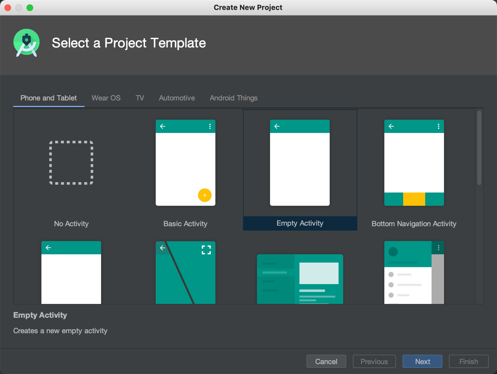
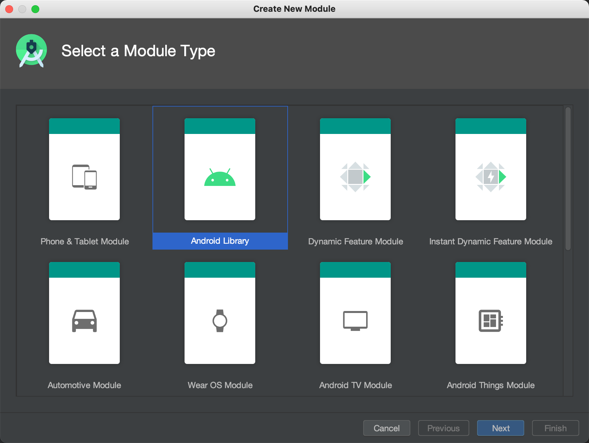
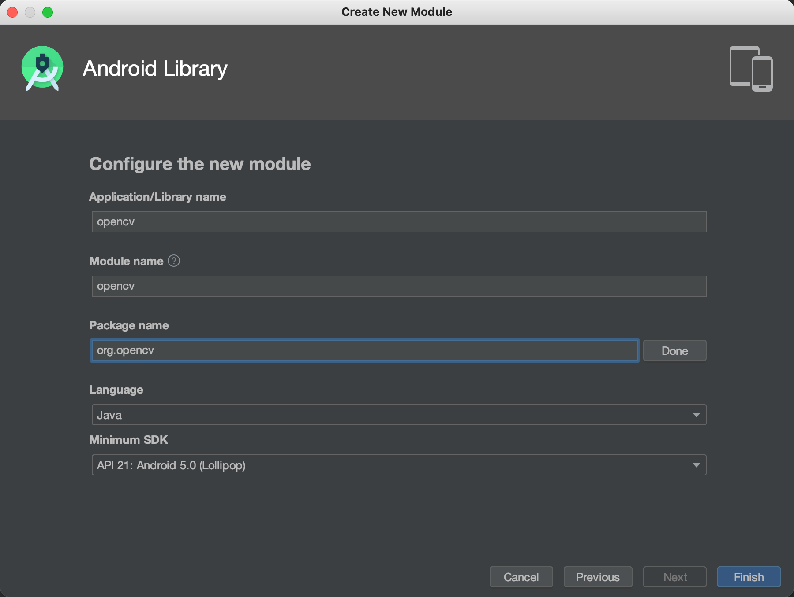
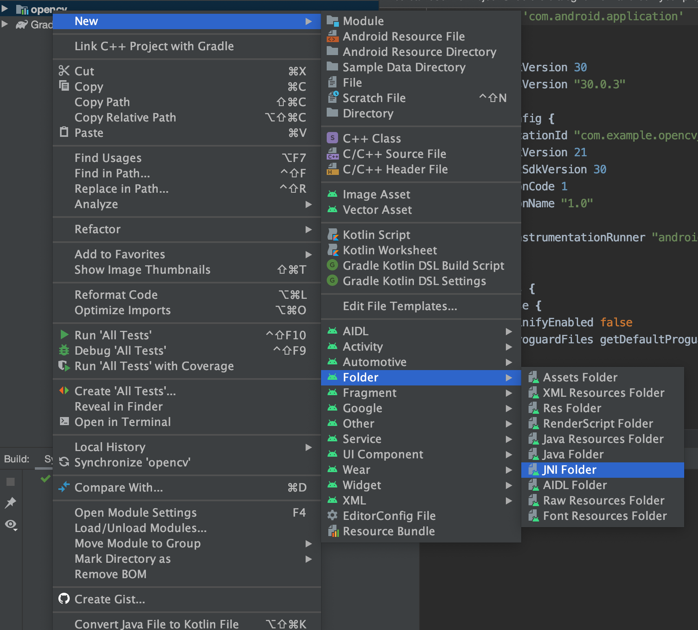
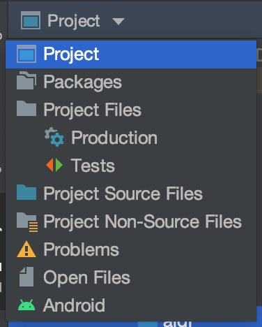
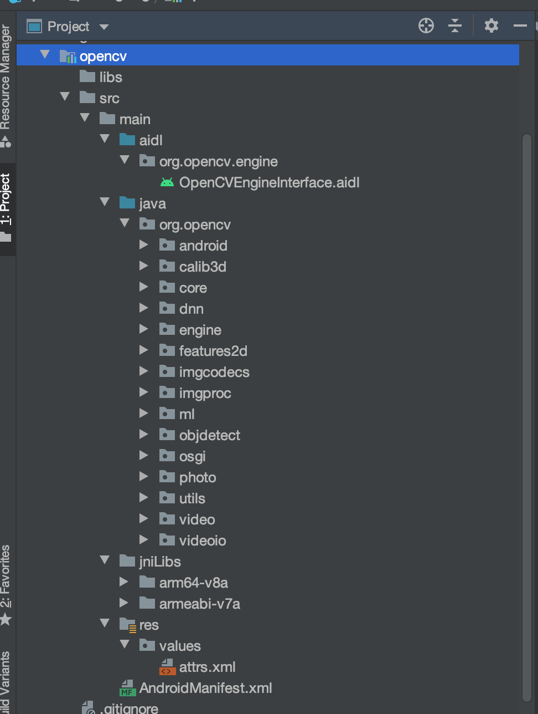
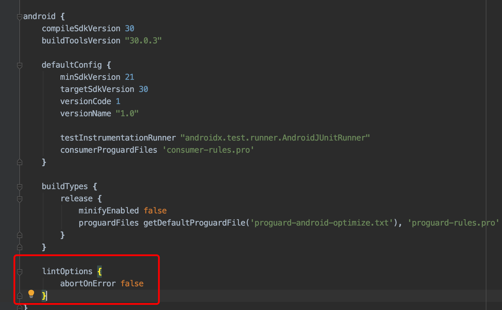
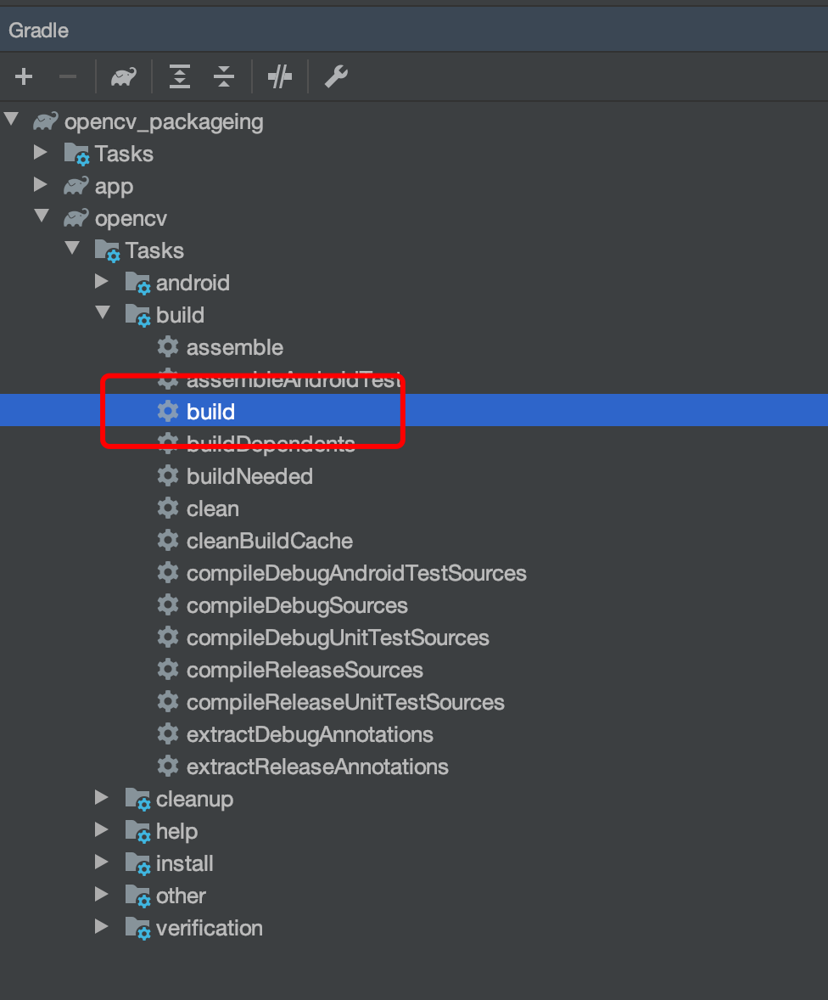
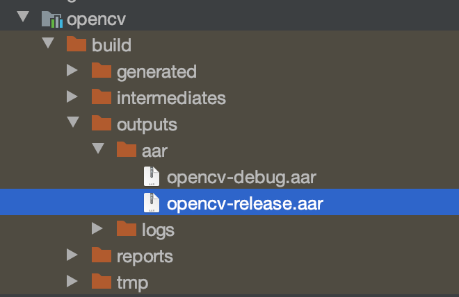
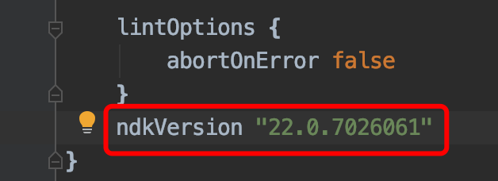

本文介绍的是如何将opencv-android-sdk打包成aar文件，以便作为lib包导入到现有项目中
第一步、下载opencv-android-sdk
- 前往opencv官网https://opencv.org/releases/ 下载对应版本的Android-sdk.zip，然后解压备用。
- 这里不管是4.x还是3.x都可以，后续步骤是一样的
第二步、创建一个空的项目
- 打开Android Studio，create new project 随便选一个Empty Activity然后第二页随便写名称，minimun sdk选择21以上即可

创建完毕之后，通过菜单new module, 选择Android Library

填写Android Library信息，同样选择Mininum SDK为21以上，其他的可以随便写，我这里包名写成org.opencv

右键opencv模块，创建AIDL文件夹

第三步、复制SDK源代码到项目中
- 为了方便查看目录结构，切换为Project

将
[opencv-sdk-dir]/sdk/java/src/org/opencv/engine/OpenCVEngineInterface.aidl文件复制到[opencv-module]/src/main/aidl/org/opencv/engine/OpenCVEngineInterface.aidl将
[opencv-sdk-dir]/sdk/java/src/下的文件夹复制到[opencv-module]/src/main/java将
[opencv-sdk-dir]/sdk/native/libs/下的arm64-v8aarmeabi-v7文件夹复制到[opencv-module]/src/main/jniLibs。作为aar打包，这一步是可选的，因为加入后会增加打包体积，可以后续直接在引用项目中再添加对应的so文件- 将
[opencv-sdk-dir]/sdk/java/res/values/attrs.xml文件复制到[opencv-module]/src/main/res/values/attrs.xml - 完成后的目录如下

然后修改[opencv-module]/build.gradle 增加lintOptions 避免lint报错打断打包进程

第四步、打包aar文件
运行 gradle task build，双击build即可

打包完成后aar文件在
[opencv-module]/build/outputs/aar/目录下，本教程直接跳过了jniLibs，打包体积在几百kB左右
如果需要将jniLibs一起打包，可能需要在build.gradle中配置ndk.version为本地已安装的版本 否则可能报错

这样打包后的aar文件大概有十几MB